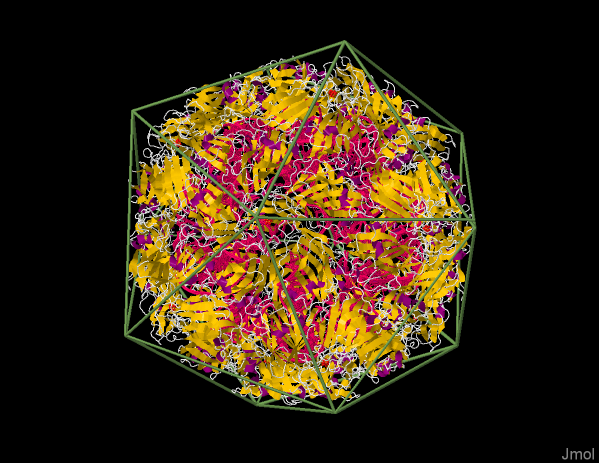

SwingJS Explained
The overall objective of SwingJS is to allow rapid porting of Java SWING Applets to JavaScript/HTML5 with a minimal to no refactoring. At the moment, "rapid" means a several hour turnaround, but we hope to expedite the process down to mere minutes.
Project History
The project derives from two successful ports of Java applets to HTML5. Both use the Java2Script (J2S) Eclipse-based compiler with a customized client JavaScript library. J2S projects are developed in Java, tested in Eclipse as Java applications or applets, and then, via a few relatively involved ANT tasks, ported to JavaScript for further browser-based testing and deployment.
The Jmol Java Applet, developed by Bob Hanson, St. Olaf College, was ported to JavaScript/HTML5 in late 2012 and early 2013 and is under very active and mature development as JSmol.
JSmol is fully operational. It is identical in operation to its Java counterpart, including massively scriptable thread-like behavior (simultaneous molecular vibration, spinning, and user mouse-event based manipulation) and reasonable 3D visualization performance without WebGL. With 160,000+ lines of ported Java code and 600,000+ documented page views per month, JSmol serves as proof-of-concept that the Java2Script compiler/library is a serious and already successful solution to the Java-to-JavaScript problem. Since 2012, Two other Java projects, JSpecView and AstexViewer, have been ported successfully. Real-time conversion to JavaScript takes approximately 3 minutes; full packaging and deployment takes about 30 minutes.
 The second project is ClientJS, developed by Udo Borkowski, abego Software et.al.. The project successfully ported several legacy Java Applet applications, mainly from the health care area, to be used as pure HTML5/JavaScript web pages. All applets are highly interactive, using table and form driven screens. The resulting HTML5/JavaScript pages use all kinds of components to provide an user experience often only known from desktop applications, including features like menu bars, tabbed register panels, combo boxes, sortable tables and many more. The Java applet version and the HTML5/JavaScript version co-exist and are created from the same source code.
The second project is ClientJS, developed by Udo Borkowski, abego Software et.al.. The project successfully ported several legacy Java Applet applications, mainly from the health care area, to be used as pure HTML5/JavaScript web pages. All applets are highly interactive, using table and form driven screens. The resulting HTML5/JavaScript pages use all kinds of components to provide an user experience often only known from desktop applications, including features like menu bars, tabbed register panels, combo boxes, sortable tables and many more. The Java applet version and the HTML5/JavaScript version co-exist and are created from the same source code.